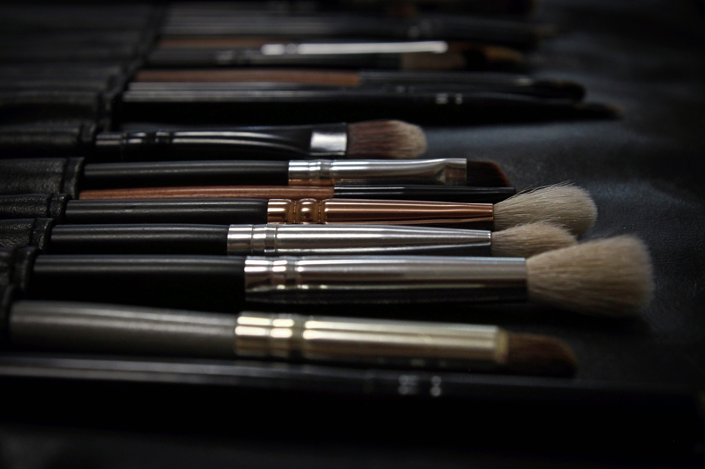

הקורסים שלנו
איפור מקצועי
קורס איפור מקצועי למתחילות ומתקדמות מבוסס על תכנית לימודי איפור מקצועי, ברמה ובסטנדרטים בינלאומיים.
טכניקות הלימוד הינן מקוריות וחדשניות ברמה בינלאומית ומתעדכנות כל הזמן.
כל השיעורים במסגרת קורס איפור מועברים ע"י צוות המורות המקצועי של בית הספר.
על מנת שהתלמידה תוכל להגיע לתוצאות מרביות, ההרצאות וההדגמות מתקיימות על במה המאפשרת לכלל התלמידות לראות
באופן ברור את כל שלבי ההדגמה.
בנוסף, משודרות ההדגמות בשידור חי על מסך הפלזמה המותקן בצמוד לבמה.
דבר המאפשר לימוד והתבוננות קרובים בזמן ההדגמה. בנוסף, במהלך הקורס לאיפור מקצועי, מתבצע מעקב אחר ההתקדמות
של כל תלמידה,
באופן אישי על ידי המורה המנחה. ליווי צמוד ואישי זה, נותן לבוגרות בית הספר לעבוד ולהיקלט בתעשיית האיפור
כולה.
איפור בסיסי
קורס איפור בסיסי למתחילות ומתקדמות מבוסס על תכנית לימודי איפור בסיסי, מומלץ בחום לכל מי שרוצה לדעת קצת
מעבר לאיפור סתמי לדעת לאפר אותך בצורה מחמיאה ביותר עם הרחבות בנושאים שונים המצטיינות בקורס אף עובדות בו
לאיפורי ערב.
טכניקות הלימוד הינן מקוריות וחדשניות ברמה בינלאומית ומתעדכנות כל הזמן.
כל השיעורים במסגרת קורס איפור מועברים ע"י צוות המורות המקצועי של בית הספר.
על מנת שהתלמידה תוכל להגיע לתוצאות מרביות, ההרצאות וההדגמות מתקיימות על במה המאפשרת לכלל התלמידות לראות
באופן ברור את כל שלבי ההדגמה.
בנוסף, משודרות ההדגמות בשידור חי על מסך הפלזמה המותקן בצמוד לבמה.
דבר המאפשר לימוד והתבוננות קרובים בזמן ההדגמה.
ישנם 4 שיעורים שבועיים כל אחד למשך 4-שעות,השיעורים
מתקיימים במבנה המרווח של הסטודיו.
בסיום הקורס כל אחת יוצאת עם תעודה שווה מטעם בית הספר ומוצרי איפור בשווי 1,500ש"ח
איפור אונליין
קורס איפור אונליין הוא קורס יחודי שנועד לתת מענה לכל אישה שמעונינת לדעת לאפר את עצמה, באופן מחמיא.
ולמה אונליין?
הקורס זמין לך בבית, ואת יכולה ללמוד בכל שעה שמתאימה לך!
הקורס כולל 12 סרטונים ללימוד מעמיק של עקרונות האיפור הבסיסים אצלך ,הסרטונים ניתנים לצפיה חוזרת כך שתוכלי
לרענן את זכרונך שוב ושוב.
הקורסים מועברים ע"י צוות המורות המקצועי של בית הספר לאיפור. בסיום הקורס אף תקבלי שובר ע"ס 100 שקלים
לקניה בחנות בית הספר.
פרטים נוספים
מתלבטת באיזה קורס לבחור?!
ריכזנו עבורך את כל הפרטים, כדי שבטוח תעשי את הבחירה הנכונה:)
| קורס איפור מקצועי | קורס איפור בסיסי | קורס איפור אונליין | |
|---|---|---|---|
| מספר שיעורים | 24 שיעורים דו- שבועיים | 4 שיעורים שבועיים | 12 סרטונים- ללא הגבלת זמן! ומטעם ה-FDA |
| בונוס | מזוודת מאפרת בשווי 7,000 ש"ח | מוצרים לאיפור עצמי מלא מותאמים לך אישית בשווי 1,500 ש"ח |
שובר ע"ס 100 ש"ח לרכישה בחנות בית הספר |
| תעודה | תעודה מטעם בית הספר ומטעם ה-FDA |
תעודה מטעם בית הספר | |
| סילבוס |
|
|
|
| מחיר | 8,200 ש"ח | 1,700 ש"ח | 400 ש"ח |
קורס איפור מקצועי
- 24 שיעורים דו- שבועיים
- תעודה מטעם בית הספר
ומטעם ה-FDA - מזוודת מאפרת בשווי 7,000 ש"ח
- סילבוס הקורס:
- טיפוח העור ובסיסי איפור
- מורפולוגיה
- קיבוע איפור ועמידותו
- הנחת קונסילרים, סמקים ושיזוף
- הנחת צלליות- טבעי ואנטומי
- הרמוניה ושילובי צבעים
- צלליות- מעושן וחתולי
- איילינר ומסקרה
- תיחום שפתיים וגבות
- הדבקת ריסים
- איפור עור בוגר ועור כהה
- איפור ערב זוהר
- הברקות ושימרים
- איפור כלה
- איפור במה
- עמידה מול לקוחות
- פרסום ושיווק
- מחיר: 8,200 ש"ח
קורס איפור בסיסי
- 4 שיעורים שבועיים
- תעודה מטעם בית הספר
- מוצרים לאיפור עצמי מלא
מותאמים לך אישית בשווי 1,500 ש"ח - סילבוס הקורס:
- טיפוח העור ובסיסי איפור
- מורפולוגיה
- הנחת קונסילרים, סמקים ושיזוף
- קיבוע איפור ועמידותו
- הנחת צלליות- טבעי ואנטומי
- איילינר ומסקרה
- הרמוניה ושילובי צבעים
- צלליות- מעושן וחתולי
- תיחום שפתיים וגבות
- הדבקת ריסים
- איפור עור בוגר ועור כהה
- איפור ערב זוהר
- הברקות ושימרים
- מחיר: 1,700 ש"ח
קורס איפור אונליין
- 12 סרטונים- ללא הגבלת זמן!
ומטעם ה-FDA - שובר ע"ס 100 ש"ח
לרכישה בחנות בית הספר - סילבוס הקורס:
- טיפוח העור ובסיסי איפור
- הנחת קונסילרים, סמקים ושיזוף
- קיבוע איפור ועמידותו
- הנחת צלליות- טבעי ואנטומי
- איילינר ומסקרה
- הרמוניה ושילובי צבעים
- תיחום שפתיים וגבות
- איפור עור בוגר ועור כהה
- איפור ערב זוהר
- הברקות ושימרים
- מחיר: 400 ש"ח